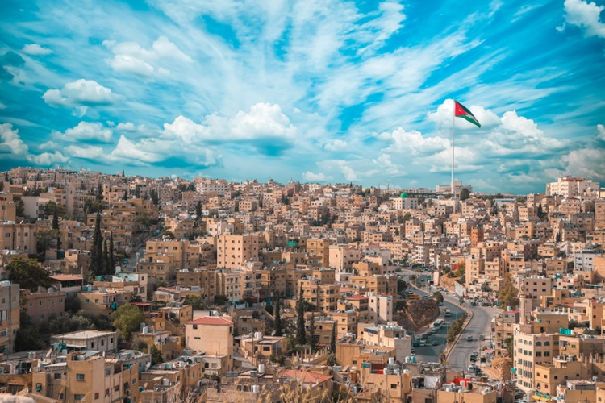
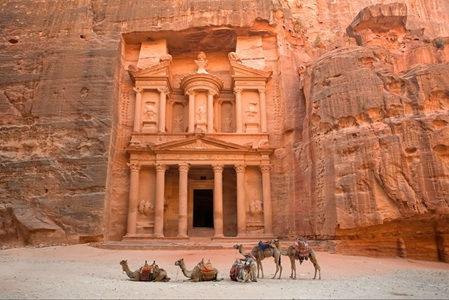
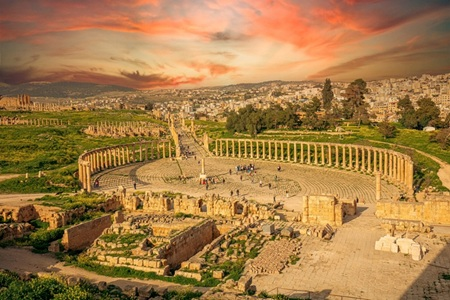

JORDAN
About Jordan
Jordan is a beautiful Middle Eastern country known for its rich history, stunning desert landscapes, and warm hospitality. It is home to Petra, one of the New Seven Wonders of the World.
Sites You Must Visit
Amman
Amman, the capital of Jordan, combines ancient history with modern urban life. Visitors can explore the Citadel, Roman Theatre, and lively Rainbow Street.
Petra
Petra is Jordan’s most famous attraction. Often called the “Rose City,” it was carved into the rock over 2,000 years ago and features the iconic Treasury.
Wadi Rum

Wadi Rum, known as the “Valley of the Moon,” offers stunning red sands and rock formations. It is perfect for jeep safaris, camel rides, and stargazing.
Jerash
Jerash is one of the best-preserved Roman cities in the world. Tourists can walk through impressive ruins like grand columns and ancient theaters.
The Dead Sea

The Dead Sea is famous for its extremely salty water which allows you to float effortlessly. It is a top spot for relaxation and wellness.
Must Taste
- Mansaf: Jordan’s national dish of lamb cooked in yogurt sauce and served over rice.
- Falafel: Crispy chickpea balls, a popular street food snack.
- Hummus: A creamy blend of chickpeas, tahini, lemon, and olive oil.
- Maqluba: A layered rice, meat, and vegetable dish flipped upside down before serving.
Tips for Travelers
- Dress modestly – Especially in cities and religious sites.
- Carry cash – Small shops and markets may not accept cards.
- Stay hydrated – Jordan can be hot and dry.
- Plan desert visits – Book guided tours for Wadi Rum.